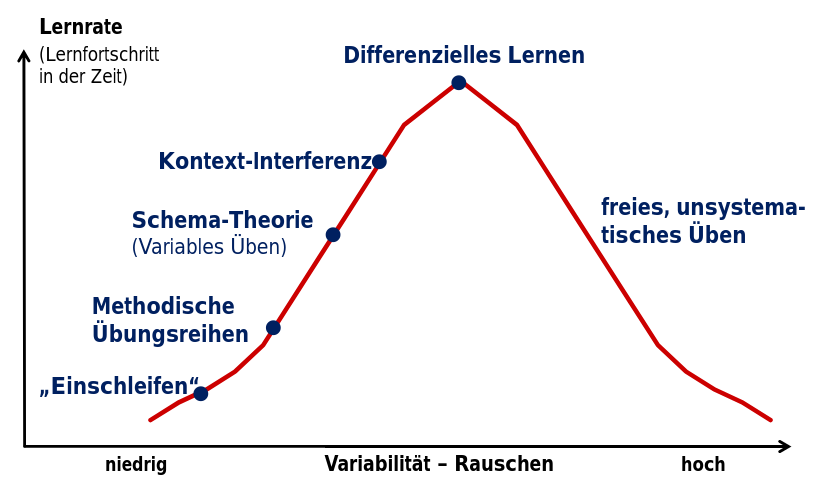

Über dieses Buch
Das Fechten ist eine Sportart mit langer Tradition. Entsprechend werden auch Lehrbücher seit mehreren hundert Jahren verfasst.
Dabei haben sich alle Aspekte des Fechtens gleich mehrfach fundamental gewandelt: Die Zielsetzung wandelte sich vom Kriegseinsatz über Duellsituationen bis zum modernen Sportfechten. Das Material änderte sich bezüglich Klingenlängen und -Geometrien genauso wie hinsichtlich der eingesetzten Materialien vielfach. Immer effektivere Schutzausrüstung ermöglicht inzwischen das gefahrlose Training nahezu jeder Kampfsituation. Entsprechend können im modernen Fechten Techniken und Taktiken eingesetzt werden, die sich früher verboten. Hinzu kommen durch neue Trainingsverfahren und neue Anthropometrie völlig andere körperliche Voraussetzungen.
Deswegen müssen wir für jeden Aspekt des Degenfechtens hinterfragen, ob wir als Ziel tatsächlich Handlungsfähigkeit und Erfolg als maßgebliche Größen betrachten, oder ob wir nicht gelegentlich mehr einem historisch geprägten ästethischen Empfinden nacheifern.
Ziel dieses Buches soll sein, in möglichst jedem Aspekt die effektivsten Taktiken, Techniken und Methoden zu identifizieren und einzusetzen.
Gerade Jugendliche, die Jahre der Ausbildung auf sich nehmen, haben ein Recht darauf, ihre Zeit effizient einzusetzen. Gleichzeitig wollen wir es jedem Menschen ermöglichen, seine/ihre individuellen Vorteile und Möglichkeiten auszuschöpfen.
In zweiter Linie wollen wir verstehen, warum Techniken oder Trainingsmethoden Erfolg zeigen und wir wollen das wissenschaftlich Begründen. Die Umsetzung neuer Erkenntnisse aus der Forschung erscheint uns ein geeigneter Weg, um unser Training stetig zu verbessern. Es soll immer gelten: Das Bessere ist der Feind des Guten.
-
Das Buch kannst Du unter unseren Lizenzbedingungen (CC-BY-SA) verwenden.
-
Wenn Du Inhalte in Deinem Training verwenden möchtest, dann freuen wir uns, wenn Du auf die Quelle hinweist.
-
Über Hilfe, Beiträge und Mitarbeit freuen wir uns. Dafür kannst Du das Degen-Trainingsbuch auf Github forken und Pull Requests erstellen. Die Autoren behalten sich aber vor, über die Aufnahme und Änderung von Inhalten zu entscheiden. Deswegen kann es sinnvoll sein, eine Diskussion zu starten, bevor Du Dir die Arbeit machst.
-
Gerne kannst Du uns für Deine Anliegen, Vorschläge und Korrektur-Hinweise Issues erstellen.
Grundlagen und Methodik
Bei Kindern und Jugendlichen im Besonderen, aber auch bei jedem anderen Menschen, ist Körper und Geist stetiger Veränderung unterworfen. Hinzu kommt, dass jedes Gefecht und auch jedes Training immer unter neuen Bedingungen ausgetragen wird. Keine Situation ist mit irgendeiner vorherigen identisch.
Wir dürfen daher nicht der Versuchung erliegen, im Hinblick auf Technik- und Taktik-Leitbilder allzu sehr zu verallgemeinern und zu sehr Gemeinsamkeiten zu suchen. Das Besondere jedes einzelnen Individuums fiele dabei sehr schnell durch das Raster (Kimmerle, 2000).
Wir müssen vielmehr darauf abzielen, die Adaption an neue Voraussetzungen und Anforderungen als wichtigste Fähigkeit zu erkennen und zu schulen. Kernpunkt ist es, dass FechterInnen in jeder Situation, die immer eine neue, nie erlebte sein muss, zumindest handlungsfähig bleibt und die Möglichkeit aufrechterhält, schnell angemessene Änderungen vorzunehmen.
Klassische Trainingsmethoden
Grundlage für traditionelles Lehren und Lernen in Verein und Schule sind drei Modellarten: (1) Lernmodelle, (2) Lehrmodelle, (3) Bewegungsmodelle.
Wesentliche Lernmodelle sind nach (Schermer, 1991):
-
Lernen durch Kontiguität, bzw. klassische Konditionierung nach Pawlow und Guthrie.
-
Lernen durch Verstärkung/ operante Konditionierung nach Thorndike, Hüll, Skinner
-
Lernen durch Beobachtung (Bandura, 1986)
-
Lernen durch Einsicht, Bewusstmachen von Bewegung (Köhler, 1917)
Wesentliche Lehrmethoden sind nach (Fetz, 1979):
-
Methodische Reihen (motorische, konditionelle, Spielreihen)
-
Induktive – Deduktive Lehrkonzepte mit analytischen/synthetischen Realisierungsansätzen
Grundlegende Bewegungsmodelle sind nach (Schöllhorn, 2005):
-
Open-Loop-Modell nach (Lashley, 1917)
-
Closed-Loop-Modell nach (Adams, 1971)
-
schematheoretisches Modell nach (Schmidt, 1975) und (Roth, 1989)
Probleme und Widersprüche der klassischen Trainingslehre
In den meisten uns bekannten Vereinen wird normalerweise nicht nach einem festen Modell gelehrt, sondern es kommt zu einer Vermischung. Intuitiv und auch mit Erfolg geben TrainerInnen in Anlehnung an das Lernen am Modell Ziel-Techniken vor und versuchen ihre SchülerInnen mit bedingter und operanter Konditionierung möglichst nahe an das eigene oder übernommene Technik-Leitbild anzunähern.
Auch explorative Methoden ("Versuch und Irrtum") werden bisweilen als Methode eingesetzt. Allzu häufig aber mit dem Ziel, die erwartete Zieltechnik möge nun endlich gefunden und eingesetzt werden. SchülerInnen finden zwar gelegentlich eigene Techniken, die eventuell sogar für ihre Voraussetzungen besser geeignet sind; diese werden aber oft als Irrtum ignoriert.
Dabei ist die vorgegebene Ideal-/Zieltechnik häufig problematisch: sie ist manchmal veraltet, oft in sich widersprüchlich und in jedem Fall nicht an die Individualität der SchülerInnen angepasst. Dennoch sollen die SchülerInnen sich nach dem Prinzip der Übereinstimmung Diatschkow, 1972 iterativ den "korrekten" Lösungen annähern, die mich hoher Wiederholungszahl eingeschlossen werden sollen Martin et al., 1991.
Zu beachten ist, dass innovative Neuerungen im Sport normalerweise erfolgen, wenn sich Trainer und Athleten nicht daran orientieren, sondern Technik und Taktik in einem neuen Umfeld neu denken oder neu erproben.
Die Problem mit Ideal-/Zieltechniken ist unter anderem die Nichtwiederholbarkeit identischer Bewegungen Hatze, 1986: selbst die besten Athleten sind nicht in der Lage, sogar einfache Bewegungen exakt identisch auszuführen.
Das Lernen einer Bewegungs-Fertigkeit bedeutet im Kern immer, dass eine Veränderung in der Steuerung der Muskulator notwendig ist, die im Gehirn vorgenommen wird und an mindestens einer der Stellen erstes Motorneuron (Upper Motor Neuron, UMN), zentraler Rhythmusgenerator (Central Pattern Generator, CPG) oder unteres Motorneuron (Lower Motor Neuron, LMN) eine Veränderung bewirkt. Diese Änderung ist bereits das erfolgte Lernen.
Inzwischen ist gut erforscht, wie diese neuroplastischen Änderungen zustande kommen: Fehler. Ein Lernprozess besteht immer darauf, dass Lernende einen Fehler begehen, der über Feedback zu Anpassungen an der plastischen Struktur des Gehirns führt. Um es deutlich zu sagen: Ohne Fehler ist Lernen unmöglich (Metcalfe, 2017).
Entsprechend gibt es neuere Lehr- und Lernmethoden, die Variabilität ins Zentrum stellen. Beispiele sind der systemdynamische Ansatz (Selbstorganisation nach (Haken et al., 1985) und die Selbststabilisierung nach (Wagner & Blickhan, 1999)). In beiden Fällen sind Fluktationen Bestandteil des Theorie.
Weiteres Problem ist die Kopplung der Bewegung an das ausführende System, also die Individualität der Bewegungsausführung.
In der Sportpraxis wird zwar immer wieder gesagt, dass Individualität als Abweichung von der Norm akzeptiert werden soll, konkret bedarf es aber der Intuition erfolgreicher Trainer und Athleten, um diese Toleranz auch umzusetzen.
Individualität der Bewegungen
Zusätzlich zum Unmöglichkeit, identische Bewegungen auszuführen (Schöllhorn, 2005) ist inzwischen bekannt, dass der Variationsbereich individueller Bewegungen in jedem Leistungsniveau erstaunlich hoch ist (Schöllhorn & Bauer, 1998).
Eine personen-übergreifende Idealtechnik ist als solche nicht mehr haltbar. Abzugrenzen ist, dass einige Variationen der Bewegungsausführung offensichtlich untauglich oder hoch problematisch sind. Solche Variationen werden Lernende aber ohnehin schnell eliminieren, wenn ihnen besser geeignete Variationen angeboten werden.
Auch für TrainerInnen sind Idealtechnik und einschleifende Lehrverfahren riskant: Niemand kann alle Fehler und Abweichungen erkennen und die Konsequenz jeder individuellen Ausführung sicher abschätzen. Es besteht die Gefahr, unbewusst fehlerhafte Ausführungen einzuschleifen. Glücklicherweise ist ein Einschleifen am Ende ohnehin nicht möglich, weil jede Wiederholung zwangläufig neue Abweichungen aufweisen muss. Folge bleibt in jedem Fall eine deutlich erhöhte Lernzeit.
Neuere Lernverfahren wie das differenzielle Lernen (siehe (Schöllhorn, 1999)) gehen davon aus, dass eine Verstärkung der ohnehin auftretenden Fluktuationen im Lernprozess eine leistungssteigernde Wirkung besitzen.
Wir wollen daher keine ideale Zieltechnik vorgeben, sondern mögliche (durchaus weite) Lösungsbereiche suchen, in denen das Training stattfindet. Wir gehen davon aus, dass die Interpolationsfähigkeit des Menschen es ermöglicht, das individuelle Ideal zwischen bekannten Werten zu ermitteln.
Differenzielle Lernmethode
Für dieses Training wird der Randbereich des Lösungsraums abgetastet, in dem der Athlet dann situationsbezogen interpoliert.
Im gesamten Lernprozess wird keine Aufgabe unverändert wiederholt, sondern der Athlet stets mit neuen Aufgaben konfrontiert. Zentraler Ansatz ist es, den Athleten auf das Neue in verstärkter Form vorzubereiten, weil es ohnehin bei einfacher Wiederholung in abgeschwächter Form auftritt (siehe (Schöllhorn, 2005)). Es wird also die Anpassungsfähigkeit an neue Aufgaben betont.
Ein Aspekt des einschleifenden Lernens ist die hohe Wiederholungszahl. Diese ist tatsächlich für den Lernprozess notwendig, denn nur viele Wiederholungen führen zu relevanten neuroplastischen Änderungen im Gehirn (CITE REQUIRED). Wir wollen unseren SchülerInnen eine für sie neue Technik nur kurz erläutern. Detaillierte Erklärungen und Demonstrationen sollen zugunsten einer hohen Wiederholungszahl und dem Abtasten eines großen Lösungsbereiches zurück stehen.
Ständiges Konfrontieren mit neuen Aufgaben ist einer der Kerne der differenziellen Lehrmethode und erlaubt nicht nur die Interpolation und Adaption auf neue Situationen, sondern stellt auch sicher, dass die SchülerInnen ein hohes Maß an Fehlern begehen, die das notwendige Feedback für neuroplastische Adaptionen bereitstellen. Wir orientieren uns an Fehlerquoten >75%.
Stabilität im Ganzen wird dabei zum Nebenprodukt, dass durch Anpassungsfähigkeit im Kleinen geschult und erzielt wird.
Ein zusätzlicher Vorteil wird beim Lehren von Kindern und Jugendlichen erzielt, die durch fortlaufend ändernde Einflussfaktoren (Wachstum, Änderung der Proportionen, …) ständiger Anpassungen ihrer Technik bedürfen, die zumindest in der Gruppe von einem Lehrenden nicht mehr geleistet werden kann (siehe (Dörner, 2013)).
Wichtig dabei ist, dass bei der Umsetzung nicht nur die theoretisch optimale, konkrete Lösung durch Variation gegen andere Lösungen stabilisiert wird. Statt dessen wird ein Lösungsraum umkreist, um auf jeden Fall neue, situativ optimale Lösungen auszuführen.
Effektivität und Effizienz der differenziellen Lehrmethoden
In verschiedenen Sportarten wurde die differenzielle Lehrmethode mit Erfolg angewandt. Zu einer ganzen Reihe davon sind Studien veröffentlicht. So im Fußball (siehe (Trockel, 2003)), Kugelstoßen (siehe (Beckmann, 2003)), Golf (siehe (Winkler, 2012)), Tennis (siehe (Wittmann, 2010)), Handball (siehe (Grüblinger, 2007)), Volleyball (siehe (Schwab, 2009)), Radsport (siehe (Bauer, 2013)), Ausdauertraining (siehe (Auer, 2007))
In allen untersuchten Fällen wurde die Vorhersage größerer Effektivität des differenziellen Lernansatzes durch Verstärkung des Rauschens bei Anfängern und Fortgeschrittenen bestätigt (signifikant bis hoch signifikant, p=0,02 bis 0,04).
Schon am Ende der untersuchten Interventionen wird der Vorteil gegenüber anderen Ansätzen messbar. Bei Retentionstests ist nicht nur ein geringerer Leistungsrückgang zu messen, sondern im Gegensatz dazu sogar Leistungssteigerungen nachgewiesen.

Bei der Auswahl geeigneter Lernverfahren für Training im Verein ist die Anwendbarkeit in großeren Gruppen. Dabei ist davon auszugehen, dass jeder Lernende ganz eigene, unterschiedliche Voraussetzungen mitbringt, die jeweils zu unterschiedlichen Leistungsoptima führen muß.
Hier kann differenzielles Lernen Vorteile bieten.
Werden einer Gruppe 5 Übungen angeboten, ist die Wahrscheinlichkeit, die Voraussetzungen aller Gruppenmitglieder zu treffen deutlich geringer, als wenn 60 Übungen angeboten werden.
Die Rolle des Trainers in differenziellen Lernen
Eine der Grundlagen des differenziellen Lernens ist die Annahme, dass jeder Mensch die Fähigkeit mitbringt, funtionale Bewegungen selbständig zu erlernen und zu optimieren. Obwohl dieses Verständnis im Kern von den meisten Lehrenden geteilt wird, ist zu beobachten, werden darauf basierende Ansätze kaum in der Trainingspraxis angenommen.
Viele Lehrende sind der Ansicht, dass mit selbstorganisierendem Lernen die Figur des Lehrenden überflüssig werde. Tatsächlich ist das Gegenteil der Fall.
Zunächst ist wichtig zu Erwähnen, dass das „klassische“ programmtheoretische Lehren und Lernen gegenüber aus Sicht des differenziellen Lernens nicht falsch oder schlecht ist. Es basiert lediglich auf einem anderen Grundsatz und führt letztlich ebenfalls zum Erfolg. Zahlreiche jüngere Studien haben aber gezeigt, dass durch differenzielles Lernen schnellere und stabilere Erfolge erreicht werden, bei gleichzeitig höherer Motivation der Lernenden.
Klassisch wird dem Trainer oft die Führungsrolle im Trainings- und Wettkampfprozess zugeschrieben. Er soll ebenfalls wichtigste Bezugsperson des Lernenden sein (siehe (Barth, 2005)). Auch dort soll, bereits beginnend im Nachwuchstraining, den Lernenden eine Mitwirkung und kritische Auseinandersetzung mit den Inhalten des Trainings nahegelegt werden. Sie ist Grundlage des sportlichen Erfolgs (ebenfalls aus (Barth, 2005)). Differenzielles Lernen verschiebt nun einen weiteren Teil des Lernwegs zum Lernenden, indem die genaue Vorgabe der Zieltechniken hin zu einer Definition des Lösungsbereichs verschoben wird.
Im Technikerwerb besteht für den Lehrenden die Herausforderung daraus, Bewegungsaufgaben auszuwählen, die ausreichende Differenzen aufweisen, aber weiterhin einen Bezug zur theoretisch optimalen Bewegungsausführung zu erhalten. Dabei sollen bewusst auch wohl bekannte Fehler integriert, um neuronale Plastizität zu provozieren.
Damit verschiebt sich einige Aufgaben des Lehrenden und der Einsatz der genutzten Lehrmittel und -Methoden, einige bleiben aber auch erhalten:
-
Die Auswahl der zu Lernenden Inhalte nach Leistungsstand und Erfahrung der Lernenden bleibt erhalten. Es soll lediglich früher Neues eingeführt werden: Neue Elemente sollen bereits eingeführt werden, bevor Bekanntes sicher beherrscht wird (siehe (Heymen, 1986)).
-
Stellen von Bewegungsaufgaben löst die Vorgabe von Ziel-Techniken ab. Gewünschte Ziel-Techniken werden nicht mehr im Detail erklärt, sondern der übliche Lösungsraum skizziert und unter der Nutzung von Varianten möglichst ohne Korrekturen und Hilfestellungen abgetastet. Korrekturen sollen aber dann erfolgen, wenn die durch den Lernenden gewählte Lösung den Regeln des Sports widerspricht oder Verletzungsgefahr besteht.
-
Korrekturen lösen Stress im Gehirn aus, vermindern dabei die Lernrate und reduzieren das Maximalkraftniveau deutlich. Es wird davon ausgegangen, dass der Lernende ausreichend Variationen angeboten bekommt, dass die für ihn optimale Bewegungsausführung angepasst an die Situation erlernt wird.
-
Das Erkennen und Auflösen von physischen Defiziten, die die erfolgreiche Ausführung eines Technik-Elements verhindern, bleibt vollumfänglich erhalten.
-
Die Zeitaufteilung im Techniktrainings verschiebt sich: im klassischen Training ist das Erklären, Erläutern und Korrigieren ein großer Block und macht oft gut die Hälfte der Trainingszeit aus. Es ist statt dessen anzustreben, dass die Lernenden den größten Teil der Zeit selbst aktiv sind. Die tatsächliche Bewegungsausführung im Lösungsbereich soll im Bereich von 90% der Zeit liegen. Dafür muss eine Ansprache gefunden werden, die eine effiziente Kommunikation von Erwartetem vom Lehrenden zu den Lernenden ermöglicht.
-
Anreize zur Selbstoptimierung setzen und Verhindern, dass Lernende die Variabilität ihrer Bewegungsausführung zu stark vermindern.
-
Begrenzung der sequenziellen Differenzen: Freie Bewegungen und einfaches „Trial-And-Error“ sind nicht ziele des differenziellen Lernens. Dieses Lernen hat im Einsteiger-Bereich Sinn und Berechtigung, reicht jedoch bei steigendem Niveau nicht mehr aus. Der Lehrende muss trotz aller Freiheitsgrade dafür sorgen, dass die Lernenden die Systematik einhalten.
Umsetzungsprinzipien
Die Methodik des differenziellen Lernens ist auf unterschiedlichste Bereiche erfolgreich anwendbar. Das reicht von den bereits erwähnten Studien in verschiedenen Einzel- und Mannschaftssportarten über Ausdauer- und Krafttraining bis hin zum Koordinationstraining (Kogler, 2006).
Die Umsetzung basiert auf dem Prinzip der Variation (Wastl, 2009):
-
Orientierung am individuellen Lösungsbereichs
-
Stabilität durch Variabilität/Einmaligkeit
-
Parameter-Variation, einschließlich Kontrastbildung im Bereich der „Invarianten“
-
Fehler als notwendige Voraussetzung des Lernens
-
Selbstoptimierung
-
selbstorganisierender, nicht-linearer Lernvorgang
Dabei wird auch der klassische Ansatz der Methodischen Reihen (z.B. nach (Heymen, 1986)) aufgelöst: Im geblockten Ansatz wird jede Übung z.B. 10 Mal hintereinander ausgeführt, bevor zur nächsten fortgeschritten wird. Im systemdynamischen Ansatz wird die Reihenfolge zufällig geändert. Sind in klassisch geblockten Ansatz nur zu Beginn einer neuen Übung größere Anpassungen nötig, variiert dann die Anzahl und Größe der Anpassungen und führt zu einem schnelleren Erfassen und Lernen der Inhalte. Zusätzlich steigt die Abwechslung für die Lernenden und damit die Motivation zur Teilnahme.
Schon (Barth, 2005) verweist darauf, dass das „selbständige Üben“ das Grundverfahren beim Erlernen und Trainineren der (Technik-)Elemente darstellt. Mit differenzieller Lernmethode sollen in den Übungen die Variationen bewusst vergrößert und keine Wiederholungen mit identischen Parametern durchgeführt werden. Variiert werden können z.B. (wieder nach (Wastl, 2009)):
-
Bewegungsausführung
-
Anfangs-, Endbedingungen
-
räumliche Ausführung
-
räumlich-zeitliche Ausführung (Geschwindigkeit)
-
dynamische Ausführung (Beschleunigung)
-
zeitliche Ausführung (Rhythmus)
-
Umfang
-
Dauer
-
-
Sinneswahrnehmungen (Einschränkungen, Verstärkung)
-
Materialien, Geräte
-
Untergrund, Gelände
-
Rahmenbedingungen, Regeln
Dabei dürfen die Anpassungen bis in den Programmbereich hinein reichen, also die Technik selbst verändern, z.B. den Ausschluss eines Körperteils oder bewusst „falsche“ Technik.
In der Gruppe sollen auch offene Spiel- und Übungsformen und forschendes Lernen eingesetzt werden (z.B. nach (Beckmann, 2009)).
Umsetzung der Variation in der Sportart Fechten
In der Sportart Fechten können alle Parameter variiert werden, solange sie sich innerhalb der vom Reglement erlaubten bewegen und nicht zu vermeidbaren Verletzungsrisiken führen. Bei Variationen außerhalb des Bereichs des Reglements ist darauf zu achten, dass eine prinzipielle Ähnlichkeit erhalten bleibt: Variationen weit außerhalb des möglichen Lösungsbereichs fallen weg.
Prinzipiell bieten sich folgende Variationsmöglichkeiten im Techniktraining an:
-
Unterschiedliche Körperpositionen (normal, tief, geduckt, vor-/zurück geneigt, …)
-
Unterschiedliche Hand- und Waffenhaltungen (Auslagen, Drehung der Hand, Griffart an der Waffe, Griffstärke, …)
-
Unterschiedliche Ausgangs-Bewegungsart (stehend, im Vorrücken, im Zurückweichen, im Sprung, …)
-
Unterschiedliche Geschwindigkeiten (langsam, schnell, submaximal, maximal, …)
-
Unterschiedliche Beschleunigung (konstant, beschleunigt, verzögert, umkehrend, …)
-
Unterschiedliche Gelenkstellungen (gebeugt, gestreckt, getreckter Arm, angewinkelter Arm, …)
-
Unterschiedliche Muskelspannung
-
Unterschiedliche Fußstellung
-
Unterschiedlicher Rhythmus, Schrittzahl, …
Um eine komplexe Technik zu erlernen, sollen pro Training nicht mehr als 60 Aktionen (jeweils unterschiedliche Variations-Kombinationen) bei 2 bis max. 3 Trainingseinheiten pro Woche absolviert werden. Spätestens dann soll die trainierte Bewegung gewechselt werden. Die Komplexität soll während einer Trainingseinheit gesteigert werden.
Technik-Training
Training der Körperbewegungen im Fechtsport
Für das Training von Körperhaltung und Körperbewegung im Fechtsport ergeben sich eine Reihe von Problemen. Zum einen fällt auf, dass bereits die Grundstellung, wie sie klassisch bspw. In (Kaspar, 2005) gelehrt wird, bei der Auswertung von Top-Athleten nicht vorzufinden ist.
Verschiedene „Stile“ resultieren bei allen Fechtern in sehr unterschiedlichen Lösungen bezüglich Kraft, Geschwindigkeit, Beschleunigung, Haltung und Energieaufwand (siehe (Roi & Bianchedi, 2008)). Diese sind nicht nur abhängig von Anthropometrie und Trainingsstand, sondern immer auch von konkreten fechterischen Situationen, die einer angepassten Lösung bedürfen.
Besonders für Heranwachsende ist das Bewegungstraining einer Herausforderung, da sich ständig änderne Hebel, Proportionen und Kraftverhältnisse eine ständige Anpassung der notwendigen Technik bedingen.
Ziel des Trainings der Körperbewegungen muss deswegen immer sein, dem Athleten Stabilität bei der Anpassung und Adaption seiner Bewegungen an neue Situationen zu ermöglichen.
Beinarbeit
Klassische Beinarbeit „auf Ansage“ und ohne Variantenvorgaben, gezielt auf die Einhaltung einer Zieltechnik, erzielt schon nach kürzester Zeit keinen technischen Lerneffekt mehr und sollte höchstens untergeordnet eingesetzt werden (siehe (Molter, 2006)), bspw. als Aufwärm- oder Stärkungsübung.
Stattdessen können alle Methoden der Beinarbeit, bspw. aus (Molter, 2006), Kap. 4.3 eingesetzt werden.
Entsprechend dem differenziellen Lehren und Lernen sollen dabei aber:
-
Keine Korrekturen erfolgen, weder einzeln noch in die Gruppe.
-
Jeweils eine Menge von Varianten vorgegeben werden (Körperposition, Geschwindigkeiten, …)
-
Keine Übung ohne Änderung wiederholt werden.
-
Spätestens nach wenigen Minuten eine komplett neue Bewegungsaufgabe in die Gruppe gegeben werden (dabei empfiehlt es sich aber auf Zeitgründen, evtl. eingesetzte Trainingsmittel nicht auszutauschen).
Zur Selbstüberprüfung der eigenen Technik sollen den Lernenden gelegentlich spielerische Wettkampf-Formen angeboten werden. Diese sollen auf externe Qualitäten (Geschwindigkeit, erzielte Präzision beim Erreichen einer Position, Treffgenauigkeit aus der Bewegung, …) statt auf interne Qualitäten („schöne Bewegungsausführung“, „tiefe Position“, …).
Der Ausfall
Als eines der grundlegenden Elemente der fechterischen Bewegungen kommt dem Ausfall eine große Bedeutung zu. Er wird in unzähligen Veröffentlichungen im Details beschrieben, bspw. In (Molter, 2006). Die tatsächlich von Sportlern durchgeführte Bewegung weicht von der Beschreibung nahezu immer ab. Das betrifft sowohl die Ausgangsposition, bei der deutlich mehr Gewicht auf dem vorderen Fuß lastet (siehe (Stewart & Kopetka, 2005)), als auch die Fussbewegung, bei der in allen beobachteten Fällen die vordere Ferse zuerst den Boden verlässt (siehe (Gholipour et al., 2008)).
Der zu trainierende Lösungsbereich könnte so eingeschränkt werden:
-
Ausgangspunkt ist eine Fechtstellung im Rahmen der gültigen Parameter oder einer Position, die aus regelkonformen Aktionen erreicht werden kann.
-
Ziel ist es, mit der Spitze der eigenen Waffe einen entfernten Punkt möglichst schnell zu treffen.
-
Dabei soll der vordere Fuß explosionsartig weiter nach vorne gebracht werden.
-
Dabei soll kein Überkreuzen der Füße erfolgen und die Bewegung soll danach beendet sein (Abgrenzung zum Fléche und zum Säbel-spezifischen „Flunge“).
Alle anderen Parameter sollen teil der zu trainierenden Variationen sein. Das betrifft insbesondere, aber nicht ausschließlich: die Reihenfolge der Arm- und Beinbewegung; die Beschleunigung/Verzögerung bei der Ausführung; die Fußstellung vor, während und nach der Ausführung; die Arm- und Handlage während der Ausführung. Dabei ist besonders bei der Vorgabe der Fußstellung darauf zu achten, dass Verletzungs-treibende Vorgaben unterbleiben (bspw. darf das Knie nicht nach innen fallen).
Der Ausfall kann auch mit Partnerübung trainiert werden. Dort ist auch die Reaktion auf gegnerische Störungen während des Ausfalls trainierbar.
Stoß- und Treffbewegungen
Die maßgeblichen Einflussfaktoren, die über erfolgreiches Treffen gewünschter Zielregionen entscheiden, sind bislang größtenteils unerforscht. Es gibt nur wenige durch Studien gesicherte Ergebnisse.
Beispielsweise ist bekannt, dass die Technik für Würfe nicht mit denen der Handführung bei Treffbewegungen im Fechten korrelieren (siehe (Bober et al., 2016)). Weiter ist bekannt, dass selbst während eines Ausfalls oder Fléche die Zeit bis zum Aufkommen des Treffers (500-600ms, aus (Borysiuk et al., 2019)) ausreicht, um das Ziel zu erfolgreich zu ändern (200ms, aus (Zeuwts et al., 2018)).
Die reine Stoß- und Treffbewegung lässt sich durch variable Stoßübungen trainieren. Gerade dabei ist die Variabilität einer der wichtigsten Faktoren, denn Treffbewegungen müssen aus unterschiedlichsten Situationen und Körper-/Handhaltungen sicher und schnell erfolgen können.
Für Stoßübungen bietet es sich an, die Übungen in kurzen Blücken durchzuführen: Es werden bezüglich einer Größe über mehrere Übungen mehrere Variationen ausgeführt (z.B. in Folge sechs verschiedene Treffer-Flächen; vier verschiedene Ausgangs-Klingenlagen). Dazu wird jeweils eine Kombination aus Variationen hineingegeben (z.B. Ausführung mit Schritt vor, Treffbewegung verlangsamend und ein Auge geschlossen).
Als Hilfmittel können z.B. dienen:
-
Markierungen auf dem Boden, mit dem unterschiedliche Fußpositionen erwürfelt werden können
-
Unterschiedliche „Waffen“, z.B. Rohre, Holzstecken, Schlauchstücke
-
bewegliche Ziele, z.B. schwingende Bälle, Stoß auf Tischtennisbälle, die in ein Tor befördert werden
Eine Durchführung auf Zeit oder auf die meisten Treffer pro Versuch in Kleingruppen hat sich bewährt.
Um wechselnde Ziele vorzugeben, können diese vorgeplant werden. Alternativ werden sie angezeigt, z.B. mittels Fencing Hit Target oder Laserpointer.
Klingenaktionen können ebenfalls geübt werden, indem in Kleingruppen Gegner neben das Ziel postiert werden. Ein Stoßtraining mit Person als Ziel hat sich dagegen nicht bewährt, da die Abneigung, ggf. schmerzhaft zu treffen oder getroffen zu werden, kaum konzentriertes Training ermöglicht.
Technisches Lektionstraining
Technische Partnerübungen
Taktiktraining
Agilitätstraining
Kraft-, Kraft-Ausdauer und kardiovaskuläre Fitness sind verhältnismäßig einfach zu trainieren und eine Erhebung des Trainingsstands ist vergleichsweise einfach.
Spezielles Agilitätstraining ist wesentlich komplizierter anzulegen, zum großen Teil, weil vergleichende Tests viel schwieriger durchzuführen sind.
In Kampfsportarten wird Agilität zum größten Teil durch das Ausüben des Sports selbst trainiert. Dabei müssen wir die Geschwindigkeit und Qualität der Entscheidungsprozesse genauso verbessern wie physische Faktoren und die notwendigen Techniken.
Kein noch so großer Anteil an Koordinationsleiter-Training wird die Sportler in ihrer Sportart agiler machen, auch wenn die so eingeübte Koordination und Beweglichkeit aus Sportart-übergreifender Sicht ein erstrebenswertes Ziel darstellt.
Um Agilität im Kampfsport zu trainieren, ist zunächst zu verstehen, was genau Agilität in diesem Kontext bedeutet. Basierend auf dem, was in vielen Trainingsbüchern, Lehrgängen und Youtube-Videos vermittelt wird, scheinen nur wenige Lehrende und Athleten wirklich zu vestehen, was Agilität bedeutet.
Definition "Agilität"
In einem älteren Video, einem UFC Countdown, wurde berichtet, dass einer der Athleten einen Agilitätstrainer beschäftigte. Der ließ den Sportler Tennisbälle fangen, die von hinter seinem Rücken gegen eine Wand vor ihm geworfen wurden. Er musste Einheiten an der Agilitätsleiter bewältigen und an der Langhantel zwischen Ober- und Untergriff wechseln.
Warum wird das als Agilität bezeichnet?
Und natürlich haben wir alle Tausende von Videos gesehen, bei denen Leiter- und Hütchenparcours so schnell abgespult werden, als würden wir sie in doppelter Geschwindigkeit sehen.
Warum diese Hindernis-Parcours? „Schnelle Füße“ scheint keine ausreichende Erklärung zu sein.
Um wirklich effektiv zu trainineren, müssen wir erklären, was Agilität im Bereich Kampfsport wirklich bedeutet.
Agilität im Kampfsport ist die Fähigkeit, Kontrolle über die Körperposition und -Haltung zu behalten, wenn sich Geschwindigkeit oder Richtung der Bewegungen als Antwort auf einen Sport-spezifischen Reiz schnell verändert.
Entscheidend dabei ist der „sportspezifische Reiz“ und das müssen wir für die folgenden Kapitel im Kopf behalten.
Oft erwähnt ist der Begriff der „reaktiven Agilität“. Basierend auf der hier genutzten Definition ist aber alle Agilität immer reaktiv und deswegen im Zusammenhang mit Agilität redundant und kann entfallen.
Agilität im Kampfsport kann offensiv oder defensiv gerichtet sein. Im Fechtsport könnte offensive Agilität es ermöglichen, erfolgreich Gegenangriffe durchzuführen. Defensive Agilität ermöglicht es, eine Abwehr zu Umgehen und den eigenen Angriff erfolgreich zu beenden.
Es ist wichtig im Kopf zu behalten, dass Fechter – wie die meisten Kampfsportler – die meiste Zeit gleichzeitig Angriffs- und Verteidigungsverhalten zeigen müssen.
Schon beim ersten Betrachten eines Gefechts ist offensichtlich, dass nichts davon aussieht wie das Fangen eines Tennisballs oder das Rennen durch eine Koordinationsleiter.
Agilität kann offen oder geschlossen auftreten. Offen bezeichnet dabei, dass eine freie Antwort auf einen Umgebungsreiz erfolgte. Geschlossen bedeutet, dass das entsprechende Maneuver vorab geplant war.
Die Beispiele am Anfang des Kapitels fallen in den Bereich der geschlossenen Agilität. Ärgerlicherweise sind sie nicht in Kampfsituationen übertragbar und helfen deswegen Sportart-spezifisch nicht weiter. Es gibt aber auch geschlossene Agilitätsübungen, die helfen.
Erfahrungen in anderen Kampfsportarten
Sichten wir die Literatur zum Thema Agilität und <beliebige Kampfsportart>, dann sind nur wenige Veröffentlichungen zu finden, meistens im Bereich Tae-Kwon-Do und Karate. Sichtet man diese Fachartikel, dann wird schnell klar, dass es sich fast ausschließlich im geschlossene Agilitätstests handelt, bei denen auf Reize geantwortet wird, die nicht Sportart-spezifisch sind (Sienkiewicz-Dianzenza & Maszczyk, 2019), (Singh et al., 2015).
Tatsächlich vergleichen einige Artikel lediglich Athleten verschiedener Sportarten bezüglich ihrer Reaktionszeiten und erreichten Werte in vordefinierten Tests (Zemková & Hamar, 2014), (Zemková, 2016).
Dabei erfahren wir zwar, wie schnell sich die Athleten bewegen können, aber wir erfahren wenig darüber, wie agil sie in ihrer jeweiligen Kampfsportart agieren.
Um herauszufinden, warum das so ist, loht sich ein Blick in die Invasionssportarten (Fußball, Rugby, American Football, Basketball, …): Hier ist Agilität deutlich besser untersucht, weil hier in jedem Spiel hunderte von Agilitätsmaneuvern in den unterschiedlichsten Szenarion auftreten.
Agilität im Kampfsport, näher betrachtet
Betrachtet man Agilitäts-Tests aus anderen Sportarten, dann wird dort tatsächlich die Geschwindigkeit der Richtungsänderungen gemessen (change of direction speed, CODS). Dabei weiß der Athlet, wo, wann und wie die entsprechende Änderung durchgeführt werden soll.
Nun sind aber CODS und Agilität unterschiedliche Fertigkeiten. In (Young et al., 2015) zeigt der Autor, einer der führenden Agilitäts-Experten, in einer Metastudie, dass CODS und Agilität nur zu 21% korreliert sind.
Da die Korrelation unter 0.5 liegt, sind CODS und Agilität unabhängig voneinander. Oder anders ausgedrückt: Schnell zu sein und seine Geschwindigkeit und Richtung schnell ändern zu können, heißt nicht, auch erfolgreich und schnell auf Sportart-spezifische Reize reagieren zu können, um beispielsweise Angriffen ausweichen zu können.
Wir wissen daher, dass Agilität mehr als nur ein physisches Können ist, sondern aus zwei Komponenten besteht:
-
Kognitive Faktoren
-
Antizipation
-
Visuelle Auswertung
-
Wissen über die Situation
-
Mustererkennung
-
-
Physische Faktoren
-
Techniken
-
Reaktive Kraft
-
Konzentrische Kraft
-
Anthropometrie
-
Oder einfacher: Kognitive Fertigkeiten bezeichnen die Fähigkeit, schnell die richtige Entscheidung zu treffen.
Um ausgeprägte agile Fertigkeiten zu besitzen, müssen Entscheidungs-Geschwindigkeit und physische Fertigkeiten beide auf hohem Niveau beherrscht werden.
Gerade erstes wird nicht trainiert, wenn wir lektionieren oder definierte Übungen durchführen, sondern nur dann, wenn wir schnell auf unbekannte gegnerische Aktionen antworten müssen.
In den meisten Team-Sportarten ist fast immer klar, wer gerade Angreifer ist und wer Verteidiger. In Kampfsportarten hingegen ist jeder Athlet fast immer gleichzeitig beides. Deswegen sind die Denkprozesse zwischen den diesen Sportart-Gruppen nur sehr beschränkt übertragbar.
Die richtige Antwort auf eine gegnerische Aktion zu finden, wird nur gelingen, wenn der Athlet ausreichend erfahren ist und genügend ähnliche Szenarios immer wieder erlebt hat und in der Lage war, sie irgendwann erfolgreich zu lösen.
Das heißt, wenn die Athleten in der Lage sind, durch ihre Erfahrung ähnlicher Situationen zu antizipieren, was passieren wird, indem sie passende Muster wahrnehmen, die sie zu korrekten Lösungen führen.
Wie unterscheiden sich Top-Athleten von durchschnittlichen?
Um herauszufinden, ob wie wichtig eine Fertigkeit für eine Sportart ist, kann man durchschnittliche Athleten mit Top-Athleten der entsprechenden Sportart vergleichen. Wenn die Top-Athleten die Fertigkeit in Tests signifikant besser beherrschen, dann besteht eine hohe Wahrscheinlichkeit dafür, dass diese Fähigkeit wichtig ist.
Leider konnte ich im Bereich der Kampfsportarten keine derartigen Vergleiche im Bereich der Agilität finden, so dass ein Rückgriff auf die Forschungen im Bereich der Team-Sportarten nötig wird.
In Netball- und Rugby-Liegen hatten höherklassige Athleten deutlich höhere Entscheidungs-Geschwindigkeiten in Reaktion zu Sportart-spezifischen Reizen als durchschnittliche Athleten (siehe (Farrow et al., 2005), (Gabbett & Benton, 2008)). Im Australischen Football sind professionelle Spieler deutlich schneller und präziser in der Entscheidungsfindung , wenn sie auf Richtungsänderungen der Angreifer reagieren (siehe (“Association between Perceptual Agility Skill and Australian Football Performance.,” 2013)).
Ähnliche Resultate wurden bei Fußballspielern gefunden: sie reagieren schneller und genauer, wenn sie Paßrichtungen in Eins-zu-Eins-Situationen antizipieren (siehe (Williams & Davids, 1998)).
Höherklassige Athleten sind außerdem weniger anfällig für Finten (siehe (Henry et al., 2012), (Jackson et al., 2006)).
Und auch insgesamt geht hervor: Top-Athleten sind nur dann signifikant besser, wenn es um die Antwort auf Sportart-spezifische Reize geht.
Was heißt das für das Training? Reaktive Übungen, z.B. mit Tennisbällen, Koordinationsleitern, Lichtern, o.ä., sind zu allgemein gehalten, um auf die Agilität in der Kampfsportart selber übertragen zu werden. Daraus verweist auch Barth in (Barth, 2005) hin, indem er empfiehlt, bei Übungen auf nicht Sportart-spezifische Signale wie Kommandos, Pfiffe und dergleichen zu verzichten.
Agilität muss als offene Fertigkeit mit Sportart-spezifischen Reizen trainiert werden, mit Unterstützung der spezifischen physischen Fertigkeiten.
Agilität in Kampfsportarten trainieren
Wir teilen auf gemäß der oben angeführen Teilkomponenten, in kognitive und physische Fertigkeiten.
Physische Fertigkeiten
Anthropometrie
Ganz allgemein gilt: Je größer ein Athlet ist, desto langsamer bewegt er sich, speziell wenn der Anteil an Muskelmasse zu gering ist. Das Ziel ist es, überflüssiges Gewicht zu reduzieren und den Muskelanteil zu erhöhen.
Körpergröße und Länge der Extremitäten sind weitere Faktoren. Es gilt aber auch: Je größer der Athlet ist, desto mehr Fläche ist zu verteidigen, insbesondere bei Ausweichmanövern. Es gibt hier allerdings wenig Möglichkeiten, Einfluss zu nehmen, aber es beeinflusst die Aktionsauswahl.
Reaktive Stärke
Reaktive Stärke ist die Fähigkeit, Kraft in einem sehr kurzen Zeitintervall (<250ms) bereitzustellen. Übungen dazu sind unter anderen:
-
Seilspringen
-
Fußgelenksarbeit (siehe (Schöllhorn, n.d.))
-
Hürdenlauf
-
Liniensprünge
-
Schnelle Hüftwürfe mit dem Medizinball
Konzentrische Stärke
Bezeichnet die Fähigkeit, Kraft bei hoher Geschwindigkeit auszuüben.
Übungen dazu sind unter anderem:
-
Kastensprünge (auch aus dem Sitzen)
-
Stand-Hochsprünge
-
Sprünge aus der Hocke (auch: mit Zusatzgewicht, aus Schrittstellung)
-
Medizinball-Würfe
-
Laterale Sprünge
-
schnelle Kniebeugen
-
Kreuzheben
Technik
Technische Fertigkeiten sind vermutlich der wichtigste Teil der phyischen Komponente der Agilität. Ziel ist es, den Athleten ein möglichst reichhaltiges Repertoir an Möglichkeiten zu geben, um bei bei Agilitäts-Manövern auswählen zu können.
Es ist wichtig, viele verschiedene Angriffs- und Verteidigungsaktionen zu kennen und zu beherrschen. Beherrscht der Athlet nur Paraden, weiß aber nicht, wie Evasionen durchgeführt werden, dann wird er auf viele Angriffe keine adäquate Antwort kennen.
Kennt er hingegen auf Gegenangriffe, dann wird er Gelegenheit erkennen, die sonst verborgen bleiben.
Das Einüben dieser Techniken kann in geschlossenen Übungen erfolgen, bei denen alles vorab geplant ist. Später, mit steigender Erfahrung, können diese Übungen in eingeschränkte oder freie Kämpfe überführt werden, die dann aber nicht bei 100% stattfinden sollen. Dort werden kognitive Fähigkeiten entwickelt.
Kognitive Fähigkeiten
Agilität ist nicht nur die Geschwindigkeit, mit der Entscheidungen getroffen und umgesetzt werden. Entscheidend ist, dass die Entscheidungen überwiegend richtig getroffen werden. Man kann so schnell reagieren wie man will – wählt man die falsche Aktion, dann wird man getroffen.
Die einzelnen Faktoren zur Entscheidungsfindung werden hier nicht einzeln herunter gebrochen, weil sie nicht isoliert trainierbar sind. Sie wirken zusammen, indem die Athleten möglichst unterschiedlichen Szenarien und Kampfsituationen ausgesetzt werden.
Indem die Athleten immer wieder einem Kampfsituationen ausgesetzt werden und aus falsch getroffenen Entscheidungen lernen können, führt dazu, dass Muster erkannt, falsche Reaktionen gehemmt und richtige Reaktionen verstärkt werden. Nur so können offene agile Reaktionen trainiert werden.
Diese Fertigkeit kann nicht in starren Lektionen vermittelt werden, sondern nur durch Übungskämpfe: leichte Übungskämpfe, aufgabenbezogene Kämpfe oder echte Kämpfe.
Echte Kämpfe sind bei Fechtern einfacher möglich als in den meisten anderen Kampfsportarten, weil durch die effektive Schutzkleidung das Verletzungsrisiko minimal ist. Wenn hier die Variabilität der Kampfsituationen gering bleibt oder eine zu geringen Intensität erreicht wird, dann soll auf aufgabenbezogene Kämpfe ausgewichen werden.
Aufgabenbezogene Kämpfe können auch eingesetzt werden, indem nur einer der Fechter eine Vorgabe erhält, so dass der andere Fechter die Möglichkeit erhält, unterschiedliche Reaktionen auf sehr ähnliche Aktionen zu erproben.
Plan für Agilitätstraining im Kampfsportart
Wie klar geworden sein sollte, kann Agilität nicht durch generische Übungen mit einem „Agilitätstrainer“ erlangt werden. Statt dessen wird Agilität zum größten Teil durch das Ausüben des Kampfsports selbst erworben.
Dennoch gibt es eine Reihe von Richtlinien, die den Erwerb fördern und beschleunigen:
-
Reaktive und konzentrische Kraft trainieren, 1-2x pro Woche
-
Das offensive und defensive Technik-Arsenal erweitern, in vorgeplanten Übungen (Partner oder Trainer)
-
Soviele echte Kampfsituationen erleben wie möglich, mit einer möglichst großen Bandbreite an Aktionen, die erlebt und durchgeführt werden. Dabei versuchen, mit der eigenen Technik das Problem zu lösen und zu korrigieren, wenn es nicht gelingt.
Training motorischer Fähigkeiten
Motorische Fähigkeiten sind die Grundlage, auf der das spezifische Fechttraining aufsetzt:
-
Ausdauer
-
Schnelligkeit
-
(Maximal-) Kraft
-
Koordination
-
Beweglichkeit
Diese motorischen Fähigkeiten sind generell für alle sportlichen Tätigkeiten relevant. Hier ist das Ziel in erster Linie, die Fähigkeiten so zu trainieren, wie sie für den Fechtsport notwendig sind.
Ausdauertraining
Modernes Sportfechten stellt nur grundlegende Anforderungen an die Ausdauerfähigkeit der AthletInnen. Die maximale Kampfzeit im Degen beträgt pro Gefecht nur 10 Minuten, in denen die meiste Zeit weit unterhalb der anaeroben Schwelle agiert wird.
Da die Ausdauerfähigkeit aber auch die Grundlage ist, um eine schnelle Erholung zwischen den Gefechten (und auch zwischen den Gefechts-Phrasen) zu ermöglichen, kommt ihr dennoch eine gewisse Bedeutung zu und sollte in Maßen separat trainiert werden.
Durch effizientes Ausdauer-Training kann außerdem die Laktattoleranz verbessert werden, sodass häufige Aktionen im Maximalkraft-Bereich besser toleriert werden können.
Um effizient Ausdauer aufzubauen, ist das Intervalltraining der kontinuierlichen Methode überlegen. Die selben Leistungssteigerungen werden mit geringerem Zeiteinsatz erzielt (z.B. (Eddy et al., 1977)).
Das betrifft nicht nur die maximale Sauerstoffaufnahme (VO2 max), sondern auch die anaerobe Kapazität. Nach (Tabata et al., 1996) kann durch vier Minuten Hochintensitäts-Intervall Training die VO2 max genauso gut verbessert werden wie durch 60 Minuten kontinuierliches Training.
Beim Intervalltraining unterscheiden wir zwischen
-
(Hoch-) Intensives Intervalltraining: findet im anaeroben Bereich statt. Die Intervalle sind dementsprechend kurz.
-
Extensives Intervalltraining: findet im aeroben Bereich nahe der anaeroben Schwelle statt. Die Intervalle sind etwas länger, die Erholungspausen sollten ebenfalls deutlich oberhalb des Ruhepuls enden.
Beispielhaftes Hochintensitäts-Ausdauertraining
Folgender Trainingsplan, basierend auf (Engel et al., 2018), setzt Hochintensives Intervalltraining mit zwei Einheiten pro Woche (unter 30 Minuten pro Einheit) um und wurde erfolgreich mit Erwachsenen und Schulkindern (12 Jahre) angewendet.
Der "normale Lauf" (ohne Angabe) in der Einheit bezieht sich auf 90% der Geschwindigkeit eines 6-Minuten-Laufs, die am Anfang der 6-Wochen-Einheit ermittelt wird. Je nach Ausstattung kann dabei die Geschwindigkeit oder die (besser) die Herzfrequenz als Vorgabe dienen. Wird die Herzfrequenz eingesetzt, dann fällt damit ebenfalls der Leistungsdruck weg, der gerade beim Einstieg in ein Ausdauertraining demotivierend wirkt.
Die "Sprint"-Einheiten werden immer mit maximal möglicher Geschwindigkeit gelaufen.
| Einheit | Beschreibung | Dauer |
|---|---|---|
1 |
|
25 min |
2 |
|
25 min |
3 |
|
26 min |
4 |
|
25 min |
5 |
|
26 min |
6 |
|
23 min |
7 |
|
25 min |
8 |
|
25 min |
9 |
|
25 min |
10 |
|
25 min |
11 |
|
26 min |
12 |
|
26 min |
Beispielhaftes Training: Kombination HIIT/SIT
Folgender Trainingsplan, basierend auf Koch et al. (2017, p. 34), nutzt abwechselndes Hochintensitäts-Intervalltraining und Sprint-Intervalltraining.
Der "normale Lauf" (ohne Angabe) in der Einheit bezieht sich auf 95% der Geschwindigkeit eines 6-Minuten-Laufs, die am Anfang der Mehr-Wochen-Einheit ermittelt wird. Je nach Ausstattung kann dabei die Geschwindigkeit oder die (besser) die Herzfrequenz als Vorgabe dienen.
Die "Sprint"-Einheiten werden immer mit maximal möglicher Geschwindigkeit gelaufen.
| Einheit | Beschreibung | Art | Dauer |
|---|---|---|---|
1 |
|
HIIT |
22:30 min |
2 |
|
HIIT |
24 min |
3 |
|
SIT |
9:40 min |
4 |
|
HIIT |
26 min |
5 |
|
HIIT |
27:50 min |
6 |
|
HIIT |
24 min |
7 |
|
SIT |
9:40 min |
8 |
|
HIT |
25 min |
4-6 Tage Pause |
|||
9 |
|
HIIT |
24 min |
10 |
|
SIT |
9:40 min |
11 |
|
HIIT |
23:20 min |
12 |
|
SIT |
9:40 min |
13 |
|
HIIT |
24 min |
14 |
|
SIT |
9:40 min |
15 |
|
HIIT |
23 min |
16 |
|
SIT |
9:40 min |
3-5 Tage Pause |
Schnelligkeitstraining
Maximalkrafttraining
Koordinationstraining
Beweglichkeitstraining
Literaturverzeichnis
Association between perceptual agility skill and Australian football performance. (2013). Journal of Australian Strength and Conditioning, 21, 42–42.
Auer, M. (2007). Differenzielles Ausdauertraining. Vergleich von klassischem Ausdauertraining mit Ausdauertraining nach systemdynamischen Ansatz im Nordic Walking. school.
Bauer, G. (2013). Veränderung von physiologischen und biomechanischen Parametern durch den Einsatz eines differentiellen Techniktrainings im Radsport. Universität Salzburg.
Beckmann, H. (2009). Differenziell springen : Sprünge durch vielfältige Variationen erlernen. Sportpädagogik., 33, 59–63.
Beckmann, H. (2003). Differenzielles Kugelstoßtraining. Messplätze, Messplatztraining, Motorisches Lernen : Ausgewählte Beiträge ; 5. Gemeinsames Symposium Der Dvs-Sektionen Biomechanik, Sportmotorik Und Trainingswissenschaft ; Universität Leipzig, Sportwissenschaftliche Fakultät, 19. Bis 21. September 2002, S. 108–112.
Bober, T., Rutkowska-Kucharska, A., Jaroszczuk, S., Barabasz, M., & Woźnica, W. (2016). KINEMATIC CHARACTERISATION OF THE LUNGE AND THE FLECHE IN EPEE FENCING: TWO CASE STUDIES. Polish Journal of Sport and Tourism, 23, 181–185. https://doi.org/10.1515/pjst-2016-0023
Borysiuk, Z., Markowska, N., Konieczny, M., Błaszczyszyn, M., Nikolaidis, P., Kręcisz, K., Knechtle, B., & Pakosz, P. (2019). Flèche versus Lunge as the Optimal Footwork Technique in Fencing. International Journal of Environmental Research and Public Health, 16. https://doi.org/10.3390/ijerph16132315
Eddy, D., Sparks, K., & Adelizi, D. (1977). The effects of continuous and interval training in women and men. European Journal of Applied Physiology and Occupational Physiology, 16, 83–89. https://doi.org/10.1007/BF00421694
Engel, F. A., Wagner, M., Roth, A., Scharenberg, S., Bossmann, T., Woll, A., & Sperlich, B. (2018). Hochintensives Intervalltraining im Sportunterricht. German Journal of Exercise and Sport Research, 48, 120–128. https://doi.org/10.1007/s12662-018-0492-5
Farrow, D., Young, W., & Bruce, L. (2005). The Development of a Test of Reactive Agility for Netball: A New Methodology. Journal of Science and Medicine in Sport / Sports Medicine Australia, 8, 52–60. https://doi.org/10.1016/S1440-2440(05)80024-6
Gabbett, T., & Benton, D. (2008). Reactive agility of rugby league players. Journal of Science and Medicine in Sport / Sports Medicine Australia, 12, 212–214. https://doi.org/10.1016/j.jsams.2007.08.011
Gholipour, M., Tabrizi, A., & Farahmand, F. (2008). Kinematics analysis of lunge fencing using stereophotogrametry. World Journal of Sport Sciences, 1, 32–37.
Grüblinger, T. (2007). Wurftraining im Handball. Die Bewegungsvariabilität durch Anwendung unterschiedlicher Trainingsmethoden. school.
Haken, H., Kelso, J. A. S., & Bunz, H. (1985). A theoretical model of phase transitions in human hand movements.
Henry, G., Dawson, B., Lay, B., & Young, W. (2012). Effects of a feint on reactive agility performance. Journal of Sports Sciences, 30, 787–795. https://doi.org/10.1080/02640414.2012.671527
Heymen, N. (1986). Lernen im Sport mit methodischen Reihen. Analyse, Beurteilung und Empfehlung methodischer Reihen fuer den Schul- und Breitensport (W. Leue, Ed.). Burgbücherei Schneider.
Jackson, R., Warren, S., & Abernethy, B. (2006). Anticipation skill and susceptibility to deceptive movement. Acta Psychologica, 123, 355–371. https://doi.org/10.1016/j.actpsy.2006.02.002
Koch, U., Schunk, C., Bachmayer, T., Probst-Hindermann, M., Nissinen, P., Lehmann, T., Rohleder, J., & Karg, S. (2017, July). Rahmentrainingskonzeption Nachwuchs - Geräteturnen weiblich - Arbeitshilfen für Trainer/innen und Übungsleiter/innen (F. a.M. Deutscher Turner-Bund, Ed.). https://www.dtb.de/fileadmin/user_upload/dtb.de/TURNEN/Standards/PDFs/Rahmentrainingskonzeption_Gtw_f%C3%BCr_BMI_08.05.19.pdf
Kogler, E. (2006). Training der koordinativen Fähigkeiten im frühen Schulater mit der Methode des differenziellen Lernens. school.
Metcalfe, J. (2017). Learning from Errors. Annual Review of Psychology, 68, 465–444. https://doi.org/10.1146/annurev-psych-010416-044022
Roi, G., & Bianchedi, D. (2008). The science of fencing: implications for performance and injury prevention. Sports Medicine (Auckland, N.Z.), 38, 465–481.
Schöllhorn, W. I., & Bauer, H.-U. (1998). Identifying individual movement styles in high Performance sports by means of self-organizing Kohonen maps.
Schöllhorn, W. (1999). Individualität - ein vernachlässigter Parameter? Leistungssport, 29(2), S. 5–12. https://www.iat.uni-leipzig.de/datenbanken/iks/open_archive/ls/lsp99_02_04-12.pdf
Sienkiewicz-Dianzenza, E., & Maszczyk, Ł. (2019). The impact of fatigue on agility and responsiveness in boxing. Biomedical Human Kinetics, 11, 131–135. https://doi.org/10.2478/bhk-2019-0018
Singh, A., Boyat, A., & Sandhu, J. (2015). Effect of a 6 Week Plyometric Training Program on Agility, Vertical Jump Height and Peak Torque Ratio of Indian Taekwondo Players. Sports and Exercise Medicine - Open Journal, 1, 42–46. https://doi.org/10.17140/SEMOJ-1-107
Stewart, S. L., & Kopetka, B. (2005). The kinematic determinants of speed in the fencing lunge. Journal of Sports Sciences, 23(2), 105.
Tabata, I., Nishimura, K., Kouzaki, M., Hirai, Y., Ogita, F., Miyachi, M., & Yamamoto, K. (1996). Effects of moderate-intensity endurance and high-intensity intermittent training on anaerobic capacity and VO(2max). Medicine and Science in Sports and Exercise, 28, 1327–1330. https://doi.org/10.1097/00005768-199610000-00018
Trockel, M. (2003). Differenzielles Torschusstraining im Fußball. Messplätze, Messplatztraining, Motorisches Lernen : Ausgewählte Beiträge ; 5. Gemeinsames Symposium Der Dvs-Sektionen Biomechanik, Sportmotorik Und Trainingswissenschaft ; Universität Leipzig, Sportwissenschaftliche Fakultät, 19. Bis 21. September 2002, S. 102–107.
Wagner, H., & Blickhan, R. (1999). Stabilizing function of antagonistic neuromusculoskeletal Systems - an analytical investigation.
Wastl, P. (2009). Anwendungsmöglichkeiten des Differenziellen Lernens im Sport. In Scriptum Sportwissenschaften Universität Wuppertal.
Williams, A., & Davids, K. (1998). Visual Search Strategy, Selective Attention, and Expertise in Soccer. Research Quarterly for Exercise and Sport, 69, 111–128. https://doi.org/10.1080/02701367.1998.10607677
Winkler, B. (2012). Vergleich unterschiedlicher Methoden im Techniktraining der Sportart Golf. Differenzielles Lernen vs. Gerätegestütztes Feedbacktraining. school.
Young, W., Dawson, B., & Henry, G. (2015). Agility and Change-of-Direction Speed are Independent Skills: Implications for Training for Agility in Invasion Sports. International Journal of Sports Science and Coaching, 10, 159–169. https://doi.org/10.1260/1747-9541.10.1.159
Zemková, E. (2016). Differential Contribution of Reaction Time and Movement Velocity to the Agility Performance Reflects Sport-Specific Demands. Human Movement, 17, 94–101. https://doi.org/10.1515/humo-2016-0013
Zemková, E., & Hamar, D. (2014). Agility performance in athletes of different sport specializations. Acta Gymnica, 44, 133–140. https://doi.org/10.5507/ag.2014.013